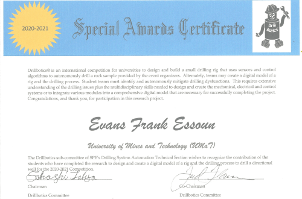

Works and Projects
I have designed a sample site for a water rafting company with great page design and attention to user experience and site functionality.

Developing of Virtual Rig
I have built a virtual rig using mathematical models developed in python and LabView in the 2020/2021 International Drillbotics competition organized by DSATS of Society of Petroleum engineers. This made my team and I the first african participant to compete in the competition and made it to the top 3 competitors. I have also developed small desktop applications using python and QT designer for building program interface. I have converted most of these applications to standalone windows applications and few of for mobile devices.